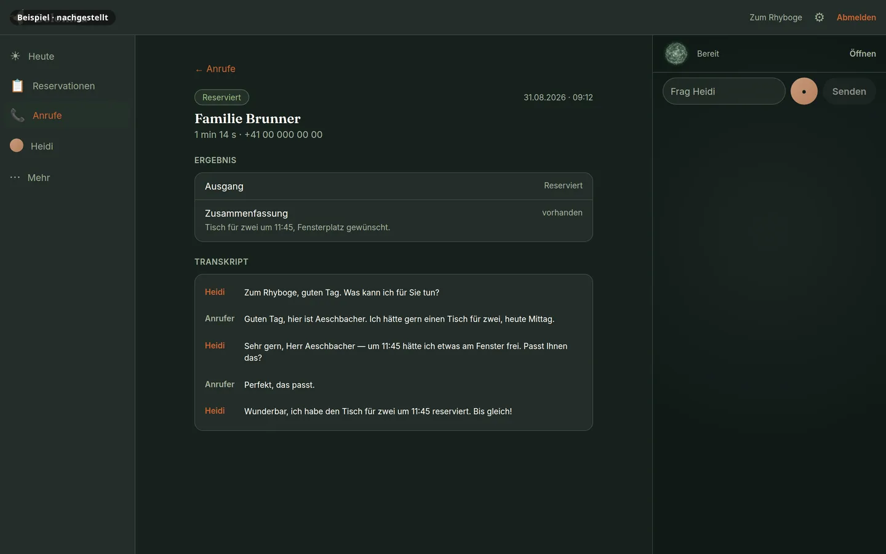
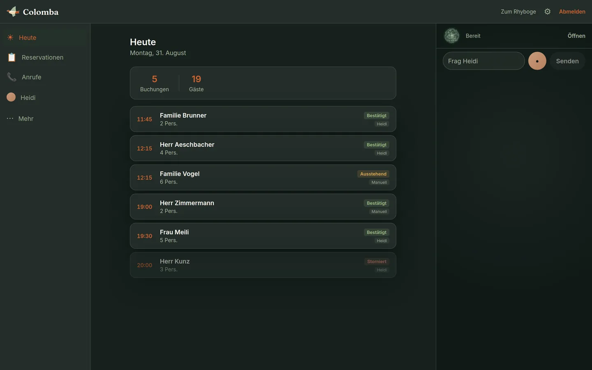
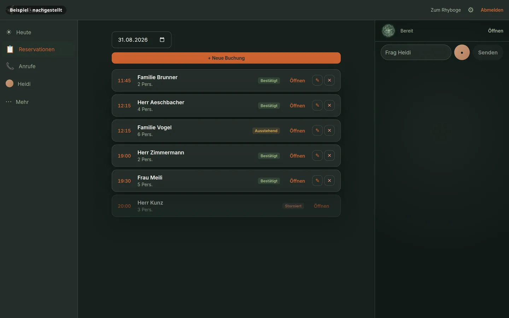

01 Der Flug · Basel
Die Nachricht hebt ab.
Der Anruf wird zur Taube. Heidi trägt den Tisch — nicht ein Formular.
01 Der Flug · Basel
Colomba
Heidi, die Betriebsassistentin für Schweizer Restaurants.
Heidi nimmt Anrufe entgegen, bucht Tische und bestätigt per SMS — rund um die Uhr, auch wenn im Service gerade niemand ans Telefon kann.
Pilotprogramm 2026 — kostenlose Testinstallation für ausgewählte Basler Restaurants.
02 Über den Bergen
So klingt ein Anruf bei Heidi.
Kein Videodreh, keine Behauptung — ein Gespräch, wie Heidi es führt. Nachgestellt, damit kein echter Gast darin vorkommt.
Heidi hört zu.
Zwei Aufgabenbereiche sind im Einsatz, fünf in Entwicklung.
-
Heidi
Grüezi, hier ist Heidi, die KI-Assistentin von Zum Rhyboge. Womit darf ich Ihnen helfen?
-
Gast
Grüezi! Haben Sie heute Abend noch einen Tisch für vier Personen?
-
Heidi
Gern — einen Moment, ich prüfe die Verfügbarkeit. Um 19 Uhr hätte es Platz. Passt Ihnen das?
-
Gast
Ja, das passt gut.
-
Heidi
Dann ist der Tisch für Sie reserviert. Sie erhalten gleich eine SMS-Bestätigung mit Ihrem Stornocode.
-
SMS an den Gast
Ihre Reservation bei Zum Rhyboge: heute, 19:00 Uhr, 4 Personen. Stornocode S-4172.
- Offenlegung im ersten Satz
- Verfügbarkeit geprüft, dann gebucht
- SMS mit Stornocode

03 Heute im Einsatz
Was Heidi übernimmt.
Heidi nimmt heute auf unserer Basler Pilotlinie echte Anrufe entgegen — 78 seit Juni. Von ihren sieben Aufgabenbereichen sind zwei im Einsatz: Telefon und Reservationen. Das kann sie:
Erreichbar, wenn niemand abnehmen kann
Mittags-Service, Abendbetrieb, Ruhetag: Heidi nimmt ab.
Tische, richtig gebucht
Heidi prüft die Verfügbarkeit und trägt die Reservation direkt ein.
Bestätigt per SMS
Der Gast erhält sofort eine Bestätigung mit Stornocode.
Antworten aus Ihrem Haus
Öffnungszeiten, Anreise, Fragen zur Karte: Heidi antwortet mit dem Wissen Ihres Betriebs.
Rückrufe werden zur Aufgabe
Rückrufe landen als Aufgabe in Ihrer App.
So klingt Heidi am Telefon
Schweizer Hochdeutsch — ruhig, warm und professionell.
04 Grenzen
Was die Taube nicht trägt.
Eine Assistentin, die ihre Grenzen kennt, ist eine Assistentin, der man vertraut.
Heidi entscheidet nichts über Geld.
Preise, Gebühren, Ausnahmen — das sagt der Wirt, nicht die Assistentin.
Heidi verspricht nichts, was nicht in Ihrer Wissensbasis steht.
Was sie nicht weiss, sagt sie — und gibt es ans Team weiter.
Heidi nimmt keine Zahlungen entgegen.
Keine Kartendaten, keine Anzahlung, keine Rechnung am Telefon.
Heidi ersetzt kein Team.
Sie nimmt ab, wenn niemand kann — den Gast am Tisch begrüssen Sie.
05 Die Landung
Ihr Betrieb, in einer App.
Was Heidi annimmt, sehen Sie in der App: Reservationen, Anrufe und Rückrufe. Web ist heute nutzbar; Android läuft im geschlossenen Test, iOS im TestFlight.


Fünf Flächen, ein Betrieb
06 Der Preis des Flugs
Was Colomba kostet.
Drei Dinge, die Sie wählen: wie viel Assistentin, wie viele Minuten, und ob Heidi bei Ihnen im Haus läuft.
Assistent
Die App und Heidis Arbeit darin — monatlich, Nutzungsbalken mit Monatsreset.
- FreeCHF 01 Anruf pro Monat, kleiner Aufgaben-Pool, 10 SMS
- StartCHF 39Der Einstieg in die bezahlten Pläne.
- PlusCHF 894× Balken, Analytik, Integrationen
- MaxCHF 16910× Balken, Priorität, Multi-Brand, Early Access
Telefonminuten
Gesprächsminuten auf Ihrer Linie — der Aufgabenbereich Telefon. SMS zählen 1:1 gegen die Minuten.
- 100 MinCHF 69CHF 0.69 pro Minute
- 250 MinCHF 159CHF 0.636 pro Minute
- 500 MinCHF 309CHF 0.618 pro Minute
- 1000 MinCHF 549CHF 0.549 pro Minute
Überhang, gestaffelt nach Monatsverbrauch: bis 100 Min CHF 0.85 · 101–200 CHF 0.75 · 201–500 CHF 0.68 · ab 501 CHF 0.62 pro Minute. Jede weitere SMS CHF 0.20.
Colomba Haus
Heidi läuft auf einer Box bei Ihnen im Haus.
- MonatlichCHF 399Max inklusive, unbegrenzte Minuten auf der Box im Haus
- JährlichCHF 3'990
- Haus Kitab CHF 1'290Box und ein Tablet, Selbstinstallation mit Heidi
- Vor-Ort-Installation+CHF 199optional
- EinzelnBox CHF 790 · Tablet CHF 490
Enthalten ist eine gleichzeitige Leitung. Jede weitere Leitung ist mit CHF 49 pro Monat bepreist; wie viele Ihr Haus trägt, messen wir vor der Installation.
Alle Preise CHF, exkl. 8.1 % MWST · monatlich kündbar · keine Einrichtungsgebühr.
07 Das Nest
Wenn Heidi bei Ihnen wohnt.
Colomba Haus ist die Variante für Betriebe, die alles im eigenen Haus behalten wollen: Heidi läuft auf einer Box in Ihrem Betrieb, die Minuten auf dieser Box sind unbegrenzt, und die Max-Stufe der App ist eingeschlossen.
Eine gleichzeitige Leitung ist enthalten — das ist die Zahl, die wir auf der Zielhardware gemessen haben, nicht die, die sich am besten liest. Was Ihr Haus darüber hinaus trägt, messen wir vor der Installation.
Was im Haus bleibt
08 Transparenz
Ihre Gäste wissen, mit wem sie sprechen.
Heidi gibt sich im ersten Satz jedes Anrufs als KI-Assistentin zu erkennen. Immer.
Wir halten das für eine Stärke. Eine Assistentin, die ehrlich ist, schafft Vertrauen — beim Gast und im Team.
09 In Entwicklung
Woran wir gerade bauen.
Heidi wächst vom Telefon zur Betriebsassistentin — Aufgabenbereich für Aufgabenbereich, ohne Datum: sichtbar wird, was unsere Messlatte besteht.
- BüroDokumente erfassen: Lieferscheine und Belege direkt aus der App fotografieren.
- TeamStempeluhr, Dienstplan und Nachrichten für den Betrieb.
- ZahlenDer Tagesblick: das Wichtigste des Tages, morgens bereit — mit Wetter und Bewertungen.
- Gäste & MarketingDer Gastlink: Gäste sehen und ändern ihre Reservation über ihren SMS-Link.
- Einkauf & LagerBestand, Lieferanten, Bestellungen — als Nächstes auf dem Plan.
- Telefon, weiter ausgebautTonalität pro Betrieb — per Du oder per Sie — und weitere Sprachen: Englisch, Französisch, Italienisch.
10 Pilotprogramm
Pilotprogramm 2026.
Wir richten ausgewählten Basler Restaurants eine kostenlose Testinstallation ein — und lernen dabei, was eine Betriebsassistentin im Alltag wirklich können muss.
Für wen
Restaurants in Basel. Wir öffnen drei bis fünf Plätze — so viele, wie wir persönlich begleiten können, und nur solange sie frei sind.
Was Sie bekommen
Eine kostenlose Testinstallation bis zum 31. Oktober 2026: Telefon, Reservationen und die App — eingerichtet und begleitet. Von uns kommt keine Rechnung; was die Umleitung Ihrer Nummer kostet, entscheidet Ihr Telefontarif.
Was wir brauchen
Eine Rufumleitung auf Ihre Colomba-Nummer — je nach Anbieter richten wir sie zusammen ein —, rund 30 Minuten Ihrer Zeit und ehrliches Feedback, auch wenn es unbequem ist.
Danach
Ab dem 1. November 2026 entscheiden Sie: weiter oder Stopp. Keine Verpflichtung, keine Kündigungsfrist.
So läuft es
- 1 · AnfrageEine Zeile per E-Mail genügt.
- 2 · GesprächWir schauen gemeinsam, ob Heidi zu Ihrem Betrieb passt.
- 3 · EinrichtungWissensbasis und Tischplan in rund 30 Minuten; die Umleitung je nach Anbieter.
- 4 · Heidi nimmt abSie hören mit und korrigieren, was nicht passt.
- 5 · AuswertungWas hat funktioniert, was fehlt noch — offen besprochen.
Ein Pilotplatz ist ein Gespräch entfernt.